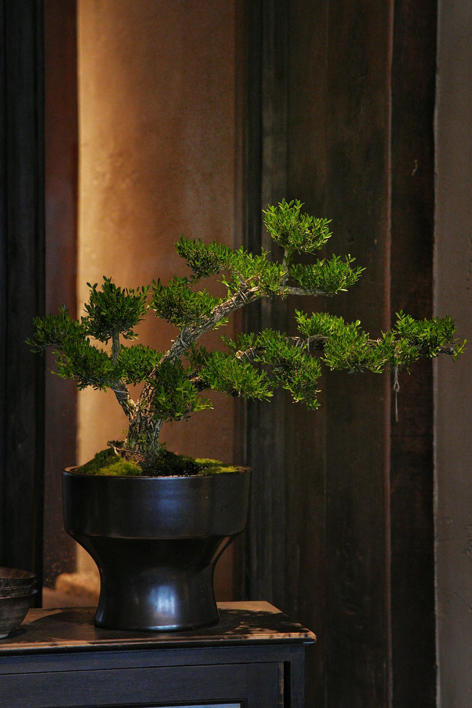

Nine years sweeping someone else's nursery
Daichi Mori came to bonsai late and by accident. Trained as a landscape gardener in Kyoto, he took a winter job in 1998 at a nursery in Omiya — then, as now, the centre of Japanese bonsai — expecting to prune garden pines. He stayed nine years.
The apprenticeship was mostly not styling. It was watering rounds, sweeping the gravel, mixing soil, and repotting under supervision — and, in the third year, being trusted with a pair of shears. What it taught was the nursery's actual trade: a bonsai is not made in an afternoon of wiring. It is kept, for decades, by someone who shows up every day and does small things at the right time.
In 2007 he moved to Oregon, drawn by the Pacific Northwest's collected material and its long, mild growing season. Ancient Branch opened in 2011 on two acres outside Portland: a bench yard, a glasshouse, cold frames, and about 140 trees, most grown on site from seed, cuttings, air layers and nursery stock. The nursery takes styling commissions and boarding on a small scale, and sells fewer than twenty trees a year.
The rule of the place came from Omiya and has never changed: every tree has a written record, and the record is honest. Ages are estimates and are labelled as estimates. Bad years are written down, not edited out. A buyer is not purchasing a finished object — they are taking over a job, and the record is how the job is handed over.

The species on the benches
Six species make up most of the nursery's work. They were chosen for the Oregon climate and for honesty: each one shows its age and its keeping in a way that cannot be faked.
| Species | Why it is grown here | Repot cycle | Character |
|---|---|---|---|
| Shimpaku juniper | Takes carving and deadwood work; forgives hard styling | Every 3–4 years | Movement and contrast — live vein against pale deadwood |
| Japanese white pine | Flaking bark and short needles reward a decade of patience | Every 4–5 years | Stillness; the tree changes least and means it most |
| Japanese black pine | The strongest grower here; candle work keeps it in scale | Every 3 years | Vigour that must be balanced, never just cut |
| Japanese maple | Fine ramification and autumn colour; layers readily from stock | Every 2 years | Delicacy above, and a root flare built like a hand |
| Chinese elm | Buds back on old wood; the most forgiving tree for students | Every 2 years | Judged bare, in winter, when nothing can hide |
| Japanese boxwood | Tolerates beginners' cuts and teaches without dying | Every 2–3 years | The teaching tree — honest about every mistake |
Soil, because most trees are lost below the rim
The nursery grows in inorganic soil: akadama (a baked Japanese clay that holds water and crumbles as roots colonise it), pumice for drainage and air, and scoria (crushed lava) for structure. A general mix is roughly equal thirds, sieved to one particle size per pot; pines get a drier mix with more pumice, maples and elms a slightly richer one.
There is no compost and no garden soil in a bonsai pot here. Organic mixes compact, hold water unevenly, and hide the state of the roots. Inorganic soil drains fast and evenly — which is why watering is a daily habit, not a weekly one. The soil is a contract: the tree gets air at its roots, and in exchange the owner shows up with the watering can.
Keeping a tree at home
Most bonsai do not die of neglect in any dramatic way. They die of a dry weekend, a dark room, or a well-meant repotting in July. This is the whole of the nursery's advice, and it fits on one page because it is mostly one habit: look at the tree every day.
Watering
Check daily; water when the surface has just dried, not before and never long after. Water thoroughly, until it runs from the drainage holes, then again a minute later. In summer heat, expect to water twice a day. There is no schedule that survives a change in the weather — the soil decides.
Light and place
Outdoors, always, for the species grown here. Bonsai are garden trees in small pots, not houseplants: a windowsill gives them weak light, dry heated air, and no winter. Four to six hours of sun, shelter from the worst wind, and a bench or stand off the ground.
Feeding
A tree in a teacup of soil has no reserves. Feed lightly and regularly through the growing season — a mild organic fertiliser every two to three weeks — and stop by late autumn. Never feed a tree that is sick, freshly repotted, or bone dry; water first, diagnose second, feed last.
Wire and pruning
Check any wire monthly. The day it starts to bite into the bark is the day it comes off — a scar from late wire takes years to grow out. Prune for shape in the right season for the species, and when in doubt, prune less: you can cut next month, but you cannot glue a branch back on.
Holidays
A neighbour with a watering can is fine for a long weekend in spring. Beyond that — or in summer at all — board the tree. Boarding here is $85 a month, $45 a fortnight, and the tree comes home watered, fed and checked, with a note of anything that was done while you were away.
When to bring a tree in
Bring it in — or send photographs the same day — if you see: foliage yellowing or dropping out of season; white or black insects clustered on new growth; soil that stays wet for days (the roots are in trouble); a pot that has cracked or tipped; or wire you can no longer unwind. Early, all of these are small jobs. Late, they are obituaries.
Owners of nursery trees get the first assessment free, every year, for as long as they own the tree. The record stays open — bring the tree, and its next page gets written.
Questions about a tree you already own?
Send photographs — the whole tree, the base of the trunk, and anything that worries you, close up. You will get a straight answer about what it needs and when.
or write directly: nursery@ancientbranch.example